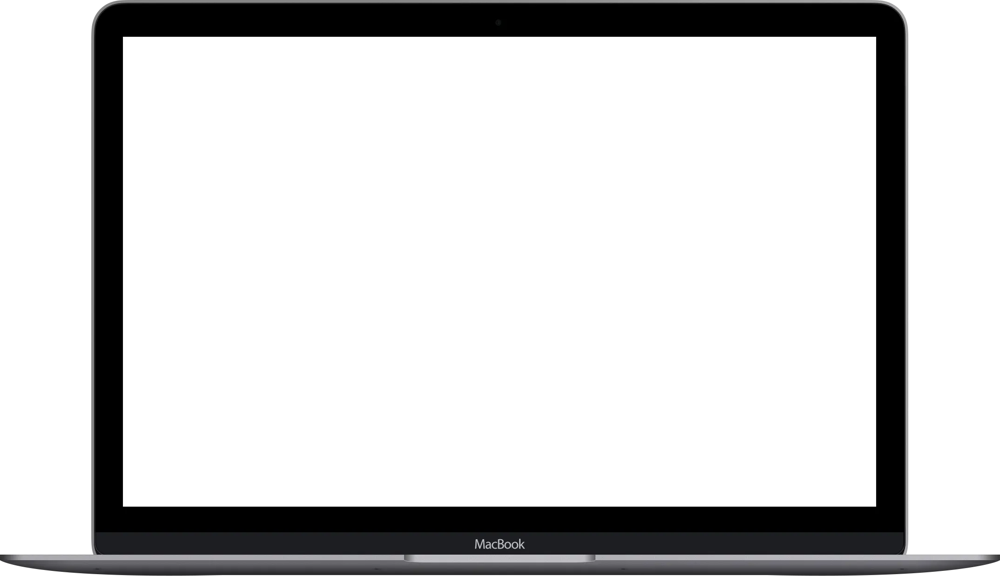
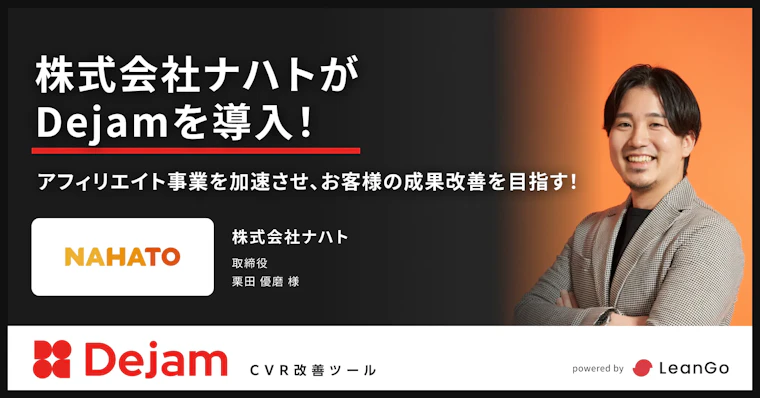
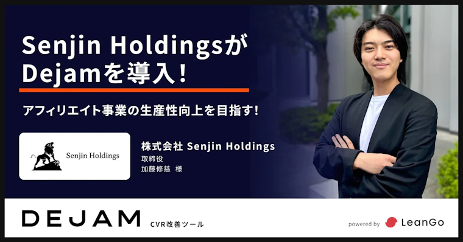
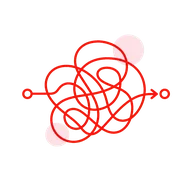
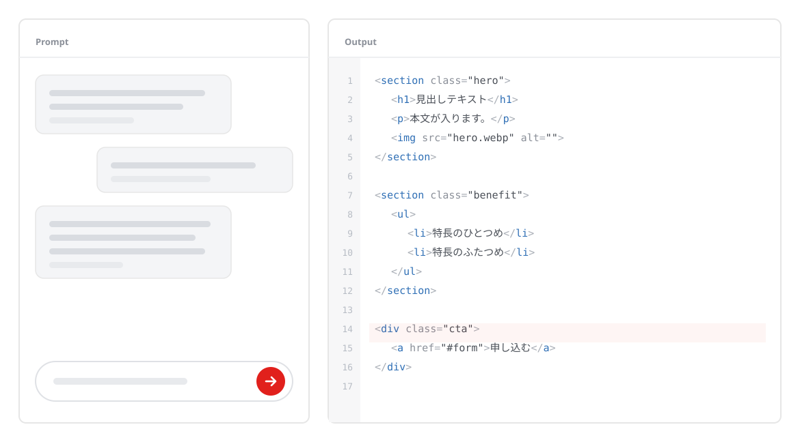
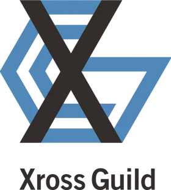

アドアフィリエイト関係者から、大絶賛。
記事LP・スワイプLP・アンケートLPの制作・改善ツール
使いにくいLPツール、
まだ使いますか？
アドアフィ運用者の乗り換え、増えてます
アドアフィ関係者のためのオールインワンLPツール。
いま他社ツールで公開中のLPも、そのまま移せます。

- 有名ツールより低価格 月30,000円〜
-
人数が増えても定額
ユーザー数
実質無制限 -
稼働中のLPも対象
移行サポート
無料
申し込みはこちら
費用はかかりません。しつこい営業はしません。
※表示価格はすべて税別・各プランの最低価格です。ご利用状況（PV・サイト規模）に応じた従量課金です。
※無料トライアルの期間・適用条件は商談時にご説明します。
導入企業の声
アドアフィリエイト事業を手がける会社から、他社ツールの乗り換えが進んでいます。
-

「LPのPDCA」を、弊社の管轄下でコントロールできる
これにより、クリエイティブや記事LPだけでなく、最終LPまで一気通貫で検証サイクルを回せるようになります。 この「圧倒的な検証スピード」こそが、他社にはないナハトの競争力になると確信しています。
栗田 優磨 様 株式会社ナハト／取締役 -

アドアフィリエイト事業者の方々が、続々とDejamを導入されている
この業界に長く携わっていますが、Dejamのような新しい記事LPツールはこれまでほとんど登場していなかったため、「ついに出てきたか」という印象を受けました。
宮阪 健太郎 様 株式会社SEIRYO／代表取締役 -

AIで7割作成して人が最後に修正する、理想の業務フローを作れるようになった
既存のツールでは「ビジュアル編集」と「コード編集」を行き来して編集できない仕様なので、うまく使えない状態でした。 また、サポートも手厚いのでバグがあった際にも安心できると考えています。
加藤 修慈 様 株式会社Senjin Holdings／取締役
- ※Dejam公式サイトで公開中の導入事例インタビューより、発言を原文のまま引用しています（掲載許諾済み）。
アドアフィ運用者の方！
記事LP運用で、こんな悩みはないですか？
乗り換えたい理由ははっきりしているのに、動けない。多くの場合、原因は次の3つに集約されます。
-
01

そもそも、使いにくい
テンプレートが多すぎて選べない。使いこなせる人が社内に限られる。 ABテストとヒートマップが別ツールに分かれていて、見比べるだけで時間が溶ける。 配信エラーが起きてもサポートの反応が遅い。
-
02
思ったより費用が膨らむ
アカウント数で課金されるため、人を増やすと月額が上がる。 かといって権限を絞ると、確認や修正の待ちが発生して現場が回らない。 結局、来月いくらになるのかが読めない。
-
03
乗り換えたいが、動けない
移行にどれだけ工数がかかるか読めない。稼働中のLPは止められない。 そもそも今の契約期間がまだ残っている。 「いつかやる」のまま、判断が先送りになっている。

いまのLP制作／改善の課題を、まとめて解決するツール。
それが、Dejam です。
LPを速く回す。
制作・分析・改善が1つの画面に揃っているので、ツールをまたぐ待ち時間がなくなります。
-
制作 ─ パーツで迷わない
記事LP・スワイプLP・アンケートLPをパーツから組み立て。 AI連携で下書きから公開までがそのままつながります。
-
分析 ─ どこで落ちたかが見える
ヒートマップで離脱箇所を特定。別ツールの数字と突き合わせる作業が不要になります。
-
改善 ─ そのままABテストへ
見つけた課題を、同じ画面でABテストに載せる。分析から改善までが一続きです。
Dejamがいちばん違うところ
ノーコードでも、コードでも。
AIの出力を、そのまま反映できる。
ノーコードエディタとHTMLを行き来できるので、AIが書いたコードをそのまま貼って、 隣のタブで見た目を直して、公開する。エンジニアの手が空くのを待たずに済みます。
ユーザー数は実質無制限。人を増やしても、月額は変わりません。
料金はPV・サイト規模に応じた従量課金です。ディレクター・デザイナー・運用担当を全員入れても、 アカウント数で請求が増えることはありません。権限を絞って現場を止める必要がなくなります。
HTML ⇄ ノーコードエディタ。
Dejam AIに修正を指示できる。
コードとノーコードの行き来が圧倒的に楽になります。AIも使いやすく、 ストレスなく、すぐにLPを修正して公開できます。
-
STEP 1
AIにHTMLを書かせる
使い慣れた生成AIで、記事LPの原稿とHTMLをまとめて出力します。

-
STEP 2
Dejamに貼る
出力をそのままコピー＆ペースト。整形やタグの手直しは不要です。

-
STEP 3
隣のタブで手直しする
ノーコードエディタに切り替えて、見出し・画像・CTAを直感的に調整します。

-
STEP 4
公開して、そのまま計測へ
公開後はヒートマップとABテストに直結。次の改善案がすぐ手に入ります。

料金プラン
3プランすべての最低価格を公開しています。どのプランでもユーザー数は実質無制限です。
他社ツールをご利用中の方は、今の月額より安くご案内します。 いまのプランと請求額をお知らせいただければ、その場で下回る条件をお出しします。
表は横にスクロールできます →
| プラン | オプティマイズ | CMS | オールインワン |
|---|---|---|---|
| 一言でいうと | 既存サイトの最適化 | 新規ページの作成 | 制作から改善まで全部 |
| 参考料金 | 月30,000円〜 | 月50,000円〜 | 月120,000円〜 |
| ユーザー数 | 実質無制限 | 実質無制限 | 実質無制限 |
| 新規LPの制作 記事LP・スワイプLP・フォーム |
— | ✓ | ✓ |
| 分析 ヒートマップなど |
✓ | ✓ | ✓ |
| 改善 ABテストなど |
✓ | ✓ | ✓ |
| 稼働中LPの移行サポート | — | ✓ | ✓ |
人を増やしても、支払いは増えない。
料金はアカウント数ではなく、PV・サイト規模に連動します。 だから「誰に権限を渡すか」を費用で判断せずに済みます。 来期の体制が変わっても、月額の見通しが崩れません。
- ※表示はすべて税別・各プランの最低価格です。ご利用状況により変動します。
- ※稼働中LPの移行サポートはCMSプラン以上が対象です。適用条件は商談時にご説明します。
Dejamが選ばれる理由
乗り換えるなら、今。 3ヶ月間は無料。稼働中のLPは無料で移行。他社ツールの契約が残っていても、並行稼働で試せます。
凡例：◎ 対応 ○ 一部対応・条件あり △ 限定的・公開情報なし
表は横にスクロールできます →
| 比較項目 | Dejam | 一般的な記事LP量産型ツール |
|---|---|---|
| 月額料金 | ◎ 30,000円〜を公開 | △ 公開情報なし |
| 料金の分かりやすさ | ◎ 全3プランを公開 | △ 公開情報なし |
| 人数が増えたときの費用 | ◎ ユーザー数実質無制限 | △ 公開情報なし |
| ノーコード編集とコードの行き来 | ◎ 自由に行き来できる | ○ 一部対応 |
| 既存サイトへの導入（タグ1行） | ◎ タグ1行で簡単導入 | ○ 一部対応 |
| エンジニアなしでの運用 | ◎ 直感的な操作で運用可能 | ○ 一部対応 |
| ヒートマップ（CVR寄与度） | ◎ 同一ツール内で可視化 | △ 公開情報なし |
| ABテスト | ◎ 同一ツール内で実施可能 | ○ 一部対応 |
| 稼働中LPの移行 | ◎ 無料で移行 ※商談時にご説明 | △ 公開情報なし |
- ※2026年7月時点で、各社が公開している情報の範囲でまとめています。
- ※公開情報で確認できない項目は「公開情報なし」としています。優劣を断定するものではありません。
乗り換えるなら今。
稼働中のLPも、無料で移行サポート。
既存ツールで公開中のLPの移行は、弊社が巻き取ります。 迅速なLPO／LP運用のために、最大限サポートいたします。
LeanGoが移行をサポートします
-
LeanGoが担当
01
稼働中LPの移設
公開中のページをDejam上に移します。お客様側で作り直す作業は発生しません。
-
LeanGoが担当
02
タグの発行・
設置手順のご案内計測タグを発行し、設置手順までご案内します。
-
LeanGoが担当
03
計測の引き継ぎ
既存の計測が途切れないよう、引き継ぎ方法をご提案します。
-
並行稼働できます
04
他社ツールの契約が
残っていても大丈夫既存ツールとDejamを並行稼働させ、更新月に合わせて切り替えられます。いま解約する必要はありません。
※移行サポートはCMSプラン以上が対象です。対応範囲・適用条件は商談時に詳しくご説明します。
Dejamの機能一覧
LP広告運用に必要な機能が、すべて揃っています。複数ツールを契約する必要はありません。


これまでの導入実績
-
90%以上
コンサルティングでの
CVR改善成功率【仮】自社調べ。算定根拠・母集団の確認待ち
-
12.5%
上場している
広告業界企業への導入率【仮】自社調べ。算定根拠・母集団の確認待ち
-
ISMS
情報セキュリティマネジメント
システム認証【仮】認証番号・取得範囲の確認待ち
導入企業の成果
 株式会社Strato Rise／代表取締役 伊藤 涼 様
かゆいところまで手が届く分析ができる
株式会社Strato Rise／代表取締役 伊藤 涼 様
かゆいところまで手が届く分析ができる
その点、Dejamはそうした悩みを感じさせないほど分析機能が充実しており、かゆいところまで手が届く分析ができます。
LP改善には、細部まで定量的に分析しながら改善サイクルを回していくことが欠かせません。その環境を実現できるのがDejamだと思います。
【仮】CPA・CVRの改善幅を記載（数値の確認待ち）

株式会社Xross Guild／代表取締役 内田 拓 様
重要なのは、配信後にどう分析し、改善を重ねていくか
形を作るだけでは広告効果は上がりません。本当に重要なのは、配信後にどのように分析し、改善を重ねていくかだと思っています。
成果につながる正しいPDCAを回したい企業は、ぜひDejamをおすすめします。
【仮】改善サイクルの回転数・成果数値を記載（数値の確認待ち）
 株式会社テマヒマ／代表取締役 平岡 大輔 様
1つの機能を使いこなすだけでも価値のあるツール
株式会社テマヒマ／代表取締役 平岡 大輔 様
1つの機能を使いこなすだけでも価値のあるツール
多くのツールが機能追加によって使い勝手が悪くなっていきます。Dejamも例外ではなく、日々進化し多機能が進んでいます。
ですが、まずは1つの機能を使いこなすだけでも価値のあるツールだと感じています。
【仮】LPO代行案件での成果数値を記載（数値の確認待ち）
よくあるご質問
他社ツールの契約が残っていても、始められますか？
はい。既存ツールとDejamを並行して動かせますので、いま解約いただく必要はありません。更新月に合わせて切り替えられます。
現時点で対応していない機能はありますか？
【仮】MCP連携、および媒体とのホストバック連携の対応状況を記載します（対応可否の確認待ち）。これらが必須要件の場合は、お申し込み前にご相談ください。
いま公開しているLPは、そのまま残りますか？
残ります。移行作業中も既存LPは公開したままで進められますので、配信を止める必要はありません。
計測は途切れませんか？
計測タグの発行と引き継ぎ方法は弊社でご案内します。切り替えのタイミングを含めて、データが途切れないよう設計してから進めます。
移行サポートはどこまで対応してもらえますか？解約するとどうなりますか？
【仮】対応範囲・適用条件・解約時の取り扱いを記載します（条件の確定待ち）。現時点では、稼働中LPの移設・タグ発行・計測引き継ぎを弊社で担当します。詳細は商談時にご説明します。
セキュリティ審査に対応できますか？
【仮】ISMS認証の取得範囲・認証番号、およびセキュリティチェックシートへの対応可否を記載します（確認待ち）。
申し込みから利用開始までの流れを教えてください。
フォームをご送信いただいたあと、弊社より現状のLPと移行範囲をヒアリングし、お見積もりをご提示します。その後、タグを設置いただければご利用を開始できます。
まずは3ヶ月間、無料で。
乗り換えの相談だけでもOKです。
- 既存ツールと並行稼働できるので、配信を止めずに判断できます
- 稼働中LPの移設・タグ発行・計測引き継ぎは、弊社が担当します
- いまの月額をお知らせいただければ、それを下回る条件をお出しします
入力30秒。費用はかかりません。しつこい営業はしません。